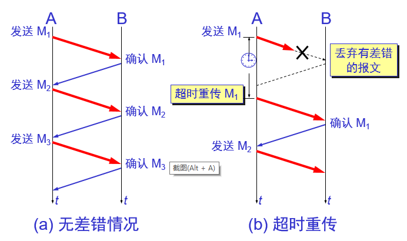
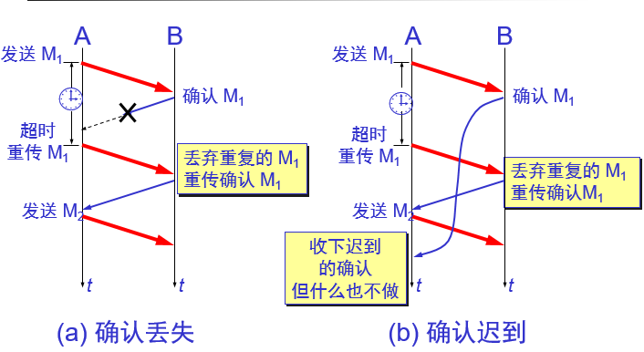
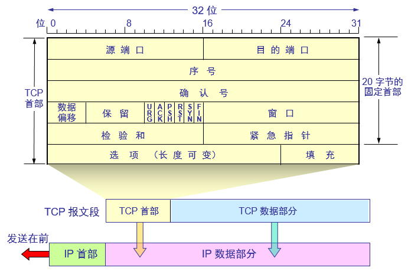
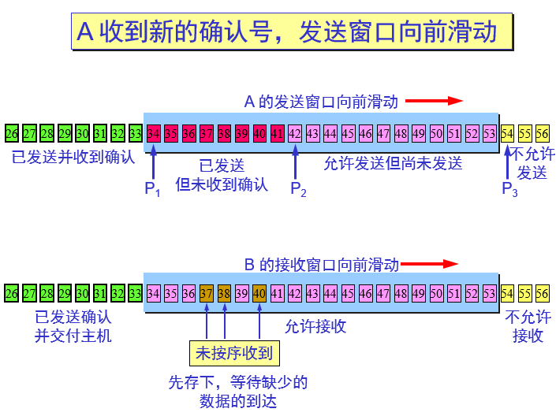

进程间通讯
从通信和信息处理的角度看，运输层向它上面的应用层提供通信服务，它属于面向通信部分的最高层，同时也是用户功能中的最低层；
当网络的边缘部分中的两个主机使用网络的核心部分的功能进行端到端的通信时，只有位于网络边缘部分的主机的协议栈才有运输层，而网络核心部分中的路由器在转发分组时都只用到下三层的功能。
运输层为相互通信的应用进程提供了逻辑通信
运输层和网络层的关系
网络层提供了不同主机之间的逻辑通讯，而运输层为不同主机上的进程之间提供了逻辑通讯(“逻辑通信”的意思是：运输层之间的通信好像是沿水平方向传送数据。但事实上这两个运输层之间并没有一条水平方向的物理连接。)；
IP为主机之间提供了逻辑通讯，IP的服务模型时尽力而为交付服务；它不做任何确保，尤其是不确保报文段的交付、不确保报文段按序交付，不确保报文段数据的完整性。
运输层的TCP和UDP最基本的责任是将两个端系统间IP的交付服务扩展为运行在端系统上的两个进程之间的交付服务。将主机间交付扩展到进程间交付被称为运输层的多路复用与多路分解。
运输层提供的服务
UDP：进程到进程的数据交付和差错检查是UDP提供的仅有的两种服务；
TCP：数据交付、差错检查、可靠数据传输、拥塞控制；
多路复用和多路分解
运输层的多路复用和多路分解，也就是将由网络层提供的主机到主机交付服务延伸到为运行在主机上的应用程序提供的进程到进程的交付服务；
一个进程有一个或多个套接字 ，它相当于从网络向进程传递数据和从进程向网络传递数据的门户。，因此在主机中运输层实际上并没有直接将数据交付给进程，而是将数据
给了一个中间的套接字。由于在任一时刻，在接受主机上可能有不止一个套接字，所以每个套接字都有唯一的标识符。标识符取决于它是UDP还是TCP套接字。
接收主机怎样将一个到达的运输层报文定向到适当的套接字？
每个运输层报文段中有几个字段，在接收端，运输层检查这些字段，标识出接收套接字，进而将报文段定向到该套接字。将运输层报文段中的数据交付到正确的套接字的工作称为多路分解。
在源主机从不同的套接字中收集数据块，并为每个数据块封装上首部信息（这将以后用于分解）从而生成报文段，然后将报文段传递到网络层，所有这些工作称为多路复用；
运输层多路复用与多路分解在主机中工作实现：
运输层多路复用要求:
1、套接字有唯一标识符；
2、每个报文段有特殊字段来指示该报文段所要交付的套接字；
这些特殊字段是源端口号字段和目的端口号字段；
在主机上的每个套接字能够分配一个端口号，当报文到达主机时，运输层检查报文段的目的端口号，并将其定向到响应的套接字。然后报文段中的数据通过套接字进入其所连接的进程。
UDP大体上是这样的，TCP中的多路复用与多路分解更为复杂。
无连接的多路复用和多路分解
一个UDP套接字是由一个二元组全面标识的，该二元组包含一个目的IP地址和一个目的端口号。因此，如果两个UDP报文段有不同的源IP地址或源端口号，但具有
相同的目的IP地址和目的端口号，那么这两个报文段将通过相同的目的套接字被定向到相同的目的进程。

面向连接的多路复用与多路分解
TCP套接字是由一个四元组（源IP地址，源端口号，目的IP地址，目的端口号）来标识的。因此，当一个TCP报文段从网络到达一个主机时，该主机使用全部4个值来
将报文段定向（分解）到相应的套接字。特别与UDP不同的是，两个具有不同源IP地址或源端口号的到达TCP报文段将被定向到两个不同的套接字，除非TCP报文段携带
了初始创建连接的请求。
无连接运输：UDP
UDP 在传送数据之前不需要先建立连接。对方的运输层在收到 UDP 报文后，不需要给出任何确认。虽然 UDP 不提供可靠交付，但在某些情况下 UDP 是一种最有效的工作方式。
UDP只是做了运输层协议能够做的最少工作。除了复用/分解功能及少量的差错检测外，它几乎没有对IP增加别的东西。
使用UDP的应用是可能现实可靠数据传输的，这可通过在应用程序自身中建立可靠传输机制来完成。
运输层的 UDP 用户数据报与网际层的IP数据报有很大区别。IP 数据报要经过互连网中许多路由器的存储转发，但 UDP 用户数据报是在运输层的端到端抽象的逻辑信道中传送的。
UDP 的主要特点
UDP 是无连接的，即发送数据之前不需要建立连接。
UDP 使用尽最大努力交付，即不保证可靠交付，同时也不使用拥塞控制。
UDP 是面向报文的。UDP 没有拥塞控制，很适合多媒体通信的要求。
UDP 支持一对一、一对多、多对一和多对多的交互通信。
UDP 的首部开销小，只有 8 个字节。
面向报文的 UDP
发送方 UDP 对应用程序交下来的报文，在添加首部后就向下交付 IP 层。UDP 对应用层交下来的报文，既不合并，也不拆分，而是保留这些报文的边界。
应用层交给 UDP 多长的报文，UDP 就照样发送，即一次发送一个报文。
接收方 UDP 对 IP 层交上来的 UDP 用户数据报，在去除首部后就原封不动地交付上层的应用进程，一次交付一个完整的报文。
应用程序必须选择合适大小的报文。
UDP 的首部格式
用户数据报 UDP 有两个字段：数据字段和首部字段。首部字段有 8 个字节，由 4 个字段组成，每个字段都是两个字节。

在计算检验和时，临时把“伪首部”和 UDP 用户数据报连接在一起。伪首部仅仅是为了计算检验和。

可靠数据传输
停止等待协议

在发送完一个分组后，必须暂时保留已发送的分组的副本。
分组和确认分组都必须进行编号。
超时计时器的重传时间应当比数据在分组传输的平均往返时间更长一些。
确认丢失和确认迟到

可靠通信的实现
使用上述的确认和重传机制，我们就可以在不可靠的传输网络上实现可靠的通信。
这种可靠传输协议常称为自动重传请求ARQ (Automatic Repeat reQuest)。
ARQ 表明重传的请求是自动进行的。接收方不需要请求发送方重传某个出错的分组 。
停止等待协议的优点是简单，但缺点是信道利用率太低。
流水线传输
发送方可连续发送多个分组，不必每发完一个分组就停顿下来等待对方的确认。
由于信道上一直有数据不间断地传送，这种传输方式可获得很高的信道利用率。

连续 ARQ 协议
累积确认
接收方一般采用累积确认的方式。即不必对收到的分组逐个发送确认，而是对按序到达的最后一个分组发送确认，这样就表示：到这个分组为止的所有分组都已正确收到了。
累积确认有的优点是：容易实现，即使确认丢失也不必重传。缺点是：不能向发送方反映出接收方已经正确收到的所有分组的信息。
回退 N
如果发送方发送了前 5 个分组，而中间的第 3 个分组丢失了。这时接收方只能对前两个分组发出确认。发送方无法知道后面三个分组的下落，而只好把后面的三个分组都再重传一次。
这就叫做 Go-back-N（回退 N），表示需要再退回来重传已发送过的 N 个分组。
可见当通信线路质量不好时，连续 ARQ 协议会带来负面的影响。
TCP 可靠通信的具体实现
TCP 连接的每一端都必须设有两个窗口——一个发送窗口和一个接收窗口。
TCP 的可靠传输机制用字节的序号进行控制。TCP 所有的确认都是基于序号而不是基于报文段。
TCP 两端的四个窗口经常处于动态变化之中。
TCP连接的往返时间 RTT 也不是固定不变的。需要使用特定的算法估算较为合理的重传时间。
TCP 报文段的首部格式

源端口和目的端口字段——各占 2 字节。端口是运输层与应用层的服务接口。运输层的复用和分用功能都要通过端口才能实现。
序号字段——占 4 字节。TCP 连接中传送的数据流中的每一个字节都编上一个序号。序号字段的值则指的是本报文段所发送的数据的第一个字节的序号。
确认号字段——占 4 字节，是期望收到对方的下一个报文段的数据的第一个字节的序号。
数据偏移（即首部长度）——占 4 位，它指出 TCP 报文段的数据起始处距离 TCP 报文段的起始处有多远。“数据偏移”的单位是 32 位字（以 4 字节为计算单位）。
保留字段——占 6 位，保留为今后使用，但目前应置为 0。
紧急 URG —— 当 URG 1 时，表明紧急指针字段有效。它告诉系统此报文段中有紧急数据，应尽快传送(相当于高优先级的数据)。
确认 ACK —— 只有当 ACK 1 时确认号字段才有效。当 ACK 0 时，确认号无效。
推送 PSH (PuSH) —— 接收 TCP 收到 PSH = 1 的报文段，就尽快地交付接收应用进程，而不再等到整个缓存都填满了后再向上交付。
复位 RST (ReSeT) —— 当 RST 1 时，表明 TCP 连接中出现严重差错（如由于主机崩溃或其他原因），必须释放连接，然后再重新建立运输连接。
同步 SYN —— 同步 SYN = 1 表示这是一个连接请求或连接接受报文。
终止 FIN (FINis) —— 用来释放一个连接。FIN 1 表明此报文段的发送端的数据已发送完毕，并要求释放运输连接。
窗口字段 —— 占 2 字节，用来让对方设置发送窗口的依据，单位为字节。
检验和 —— 占 2 字节。检验和字段检验的范围包括首部和数据这两部分。在计算检验和时，要在 TCP 报文段的前面加上 12 字节的伪首部。
紧急指针字段 —— 占 16 位，指出在本报文段中紧急数据共有多少个字节（紧急数据放在本报文段数据的最前面）。
选项字段 —— 长度可变。TCP 最初只规定了一种选项，即最大报文段长度 MSS。MSS 告诉对方 TCP：“我的缓存所能接收的报文段的数据字段的最大长度是 MSS 个字节。”
MSS (Maximum Segment Size)是 TCP 报文段中的数据字段的最大长度。数据字段加上 TCP 首部才等于整个的 TCP 报文段。
以字节为单位的滑动窗口

发送缓存 :
接受缓存 :
发送缓存与接收缓存的作用：
发送缓存用来暂时存放：
发送应用程序传送给发送方 TCP 准备发送的数据；
TCP 已发送出但尚未收到确认的数据。
接收缓存用来暂时存放：
按序到达的、但尚未被接收应用程序读取的数据；
不按序到达的数据。
超时重传时间的选择
重传机制是 TCP 中最重要和最复杂的问题之一。
TCP 每发送一个报文段，就对这个报文段设置一次计时器。只要计时器设置的重传时间到但还没有收到确认，就要重传这一报文段。
TCP 的运输连接管理
运输连接的三个阶段
运输连接就有三个阶段，即：连接建立、数据传送和连接释放。运输连接的管理就是使运输连接的建立和释放都能正常地进行。
连接建立过程中要解决以下三个问题：
要使每一方能够确知对方的存在。
要允许双方协商一些参数（如最大报文段长度，最大窗口大小，服务质量等）。
能够对运输实体资源（如缓存大小，连接表中的项目等）进行分配。
TCP 连接的建立都是采用客户服务器方式。
主动发起连接建立的应用进程叫做客户(client)。
被动等待连接建立的应用进程叫做服务器(server)。
TCP 的连接建立(三次握手)
第一次握手：A 的 TCP 向 B 发出连接请求报文段，其首部中的同步位 SYN = 1，并选择序号 seq = x，表明传送数据时的第一个数据字节的序号是 x。
第二次握手：B 的 TCP 收到连接请求报文段后，如同意，则发回确认。B 在确认报文段中应使 SYN = 1，使 ACK = 1，其确认号ack = x + 1，自己选择的序号 seq = y。
第三次握手：A 收到此报文段后向 B 给出确认，其 ACK = 1，确认号 ack = y + 1。A 的 TCP 通知上层应用进程，连接已经建立。B 的 TCP 收到主机 A 的确认后，也通知其上层应用进程：TCP 连接已经建立。
TCP 连接必须经过时间 2MSL 后才真正释放掉：
第一，为了保证 A 发送的最后一个 ACK 报文段能够到达 B。
第二，防止 “已失效的连接请求报文段”出现在本连接中。A 在发送完最后一个 ACK 报文段后，再经过时间 2MSL，就可以使本连接持续的时间内所产生的所有报文段，都从网络中消失。这样就可以使下一个新的连接中不会出现这种旧的连接请求报文段。
TCP 的连接的释放（四次挥手）
关闭A到B的通道：
数据传输结束后，通信的双方都可释放连接。现在 A 的应用进程先向其 TCP 发出连接释放报文段，并停止再发送数据，主动关闭 TCP 连接。A 把连接释放报文段首部的 FIN = 1，其序号seq = u，等待 B 的确认。
B 发出确认，确认号 ack = u + 1，而这个报文段自己的序号 seq = v。TCP 服务器进程通知高层应用进程。从 A 到 B 这个方向的连接就释放了，TCP 连接处于半关闭状态。B 若发送数据，A 仍要接收。
关闭B到A的通道：
若 B 已经没有要向 A 发送的数据，其应用进程就通知 TCP 释放连接。
A 收到连接释放报文段后，必须发出确认。 在确认报文段中 ACK = 1，确认号 ack = w + 1，自己的序号 seq = u + 1。
TCP 的流量控制
利用滑动窗口实现流量控制
一般说来，我们总是希望数据传输得更快一些。但如果发送方把数据发送得过快，接收方就可能来不及接收，这就会造成数据的丢失。
流量控制(flow control)就是让发送方的发送速率不要太快，既要让接收方来得及接收，也不要使网络发生拥塞。
利用滑动窗口机制可以很方便地在 TCP 连接上实现流量控制。
持续计时器
TCP 为每一个连接设有一个持续计时器。
只要 TCP 连接的一方收到对方的零窗口通知，就启动持续计时器。
若持续计时器设置的时间到期，就发送一个零窗口探测报文段（仅携带 1 字节的数据），而对方就在确认这个探测报文段时给出了现在的窗口值。
若窗口仍然是零，则收到这个报文段的一方就重新设置持续计时器。
若窗口不是零，则死锁的僵局就可以打破了。
拥塞控制的一般原理
在某段时间，若对网络中某资源的需求超过了该资源所能提供的可用部分，网络的性能就要变坏——产生拥塞(congestion)。
出现资源拥塞的条件：对资源需求的总和 > 可用资源
若网络中有许多资源同时产生拥塞，网络的性能就要明显变坏，整个网络的吞吐量将随输入负荷的增大而下降。
拥塞控制与流量控制的关系
拥塞控制所要做的都有一个前提，就是网络能够承受现有的网络负荷。
拥塞控制是一个全局性的过程，涉及到所有的主机、所有的路由器，以及与降低网络传输性能有关的所有因素。
流量控制往往指在给定的发送端和接收端之间的点对点通信量的控制。
流量控制所要做的就是抑制发送端发送数据的速率，以便使接收端来得及接收。
略